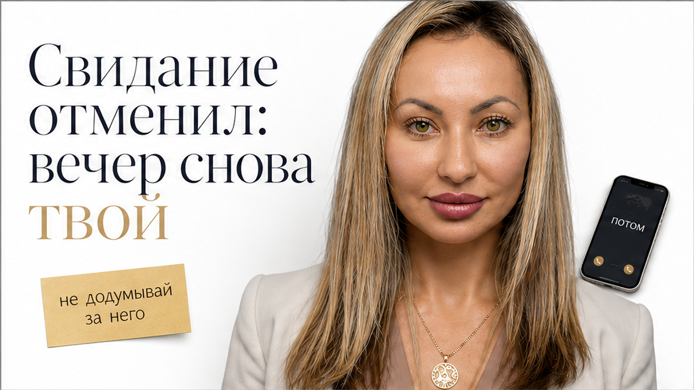
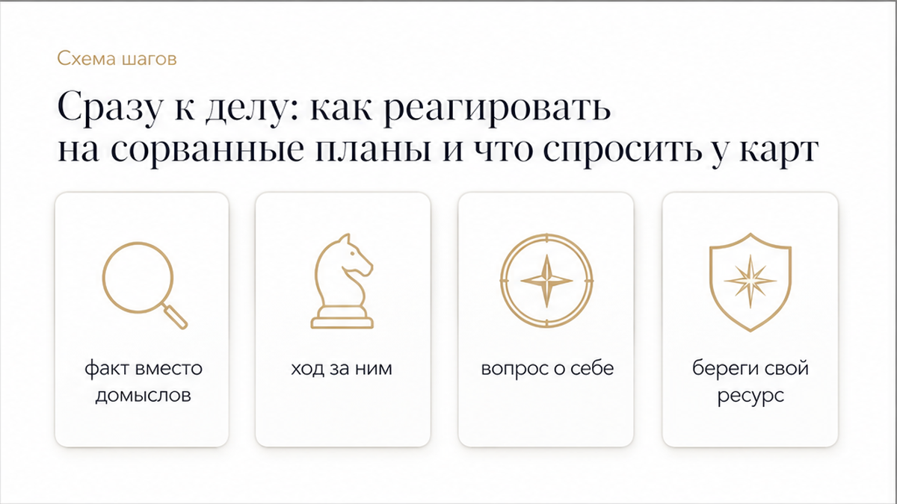
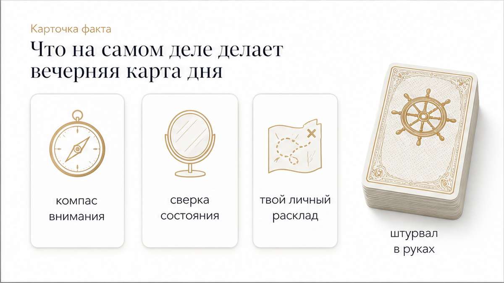
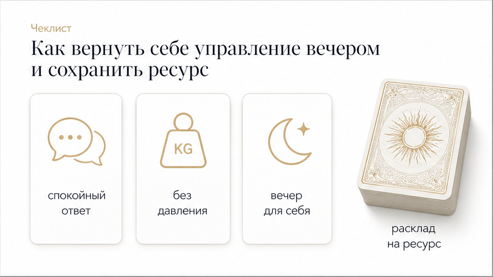

Виктория - таролог команды «ТАРО СЕЙЧАС»

Экран телефона вспыхивает коротким сообщением за пару часов до встречи: «Сегодня не получится, давай как-нибудь потом». Ты уже собралась, перестроила дела и держала этот пятничный вечер свободным. Внезапная отмена оставляет пустоту, и первая автоматическая реакция — схватиться за колоду и начать пытать карты: «Что он на самом деле думает?», «Почему он так поступил?», «Напишет ли он снова?». Но попытка прочитать чужие мысли через таро — это тупик, который только вытягивает силы и разгоняет тревогу.
Карта дня работает совсем иначе. Она не взламывает чужую голову и не подглядывает за мужскими мотивами, а возвращает фокус к единственному, что остаётся в твоих руках: к твоим суткам, твоему состоянию и твоим планам на освободившийся вечер.

Когда назначенная встреча срывается без конкретной даты переноса, важно сразу отделить факты от домыслов:
Вместо бесплодных попыток угадать чужие мысли задай картам точные практические вопросы:
Если нужно быстро прояснить ситуацию и вернуть себе внутреннее равновесие, используй проверенные инструменты:
Главная ловушка при отмене свидания — привычка додумывать чужую мотивацию. Мозг моментально начинает искать скрытые смыслы: охладел, проверяет границы, манипулирует или обиделся. Поведенческая психология объясняет это проще: люди часто искренне соглашаются на встречу заранее, но к назначенному дню переоценивают силы и отменяют планы из-за накопившейся усталости, получая быстрое облегчение от сброшенных обязательств.
Реальная причина в чужой голове тебе всё равно недоступна, а бесконечные догадки только подкармливают стресс. Единственный твёрдый факт перед тобой — сегодня встреча не состоится, и мужчина не предложил альтернативное время. Если в ответ броситься выяснять отношения, предлагать другие дни или искать скрытый подтекст, ответственность за ваши встречи полностью переедет на твои плечи.
Спокойный, нейтральный ответ («Хорошо, дай знать, когда появится время») оставляет инициативу за ним и бережёт твоё достоинство. А освободившиеся часы становятся пространством для заботы о себе.

В практике таро карта дня — это персональный компас твоего внимания, а не хрустальный шар гадалки. Утренний аркан помогает задать фокус на день, а вечерний съём подводит итоги: где удалось удержать границы, а где эмоции увели в пустые переживания и слили энергию.
Примечательно, что в одну и ту же пятницу разные прогнозы называют совершенно разные арканы: где-то выпадает Колесница, где-то Девятка Кубков или Королева Жезлов. Массовый прогноз из интернета никогда не заменит твой личный диалог с колодой, потому что он ничего не знает о твоей жизни.
Если в твоём личном раскладе выходит аркан воли и движения, такой как Колесница, его смысл противоположен слежке за чужими шагами. Он напоминает: возьми штурвал в свои руки и не отдавай управление пятницей чужой отмене. А если выпадает карта резких перемен или сбоя планов, ориентир один — не пытаться силой склеить разрушенный график, а гибко перестроиться под реальность.

Сорванная встреча не делает вечер испорченным. Чтобы вернуть контроль над своим временем и настроением, сделай три простых шага:
Не позволяй чужой отмене перечёркивать твоё настроение и красть вечер пятницы. Вернись в центр своей жизни и разложи ситуацию по полочкам с помощью точных инструментов: